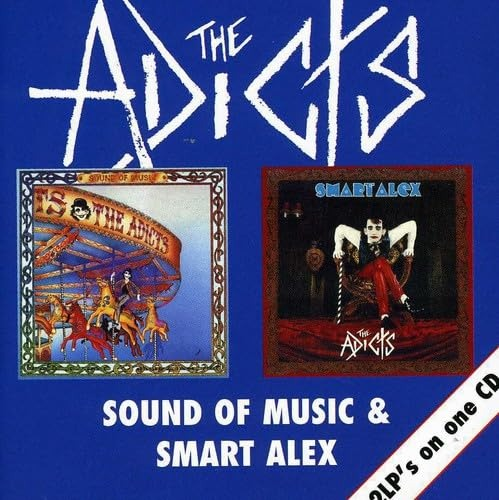

| ●タイトル | |
| Songs of Praise | |
| ●コメント | |
| THE ADICTSの1st ALBUM、リリースは81年。 正直聞かず嫌いであった。だが、今まで聞いてきたPUNKBANDとは違い、POPやらダークな感じやらで、見た目も中身も怪しさたっぷり、てんこもり！！そしていつの間にか口ずさむ『VIVA LA REVOLUTION』、爽快なPUNK ROCKナンバー！！VIVA 全曲必聴！おすすめ！！ 自分的に影響大のBAND。ちなみに結成は78年、意外ですね～。 |
|
| ●タイトル | |
| Sound of Music | |
| ●コメント | |
| 2nd ALBUM。前作よりも、POPさが増し、BANDとしてもまとまりが出てき、楽曲的にもかなりパワーアップし、より彼等らしくなったALBUMだ。音は1STとは違い暗→明になった感じ。スピード感もよし！！すばらしきTHE ADICTS。『HOW SAD』『4321』にはやられ、よ く聞いてました。これまた全曲必聴、楽しめること間違いなし、おすすめ！名曲揃い！！ それじゃ、Let's go！Let's go！ | |
| ●タイトル | |
| Smart Alex | |
| ●コメント | |
| 事実上、4th ALBUM(ちなみに3rdは78～80年の初期音源集)。始めからやられちゃいます、ベートーベンです。今作はなんだかシックな感じでやってくれます。だがPOPです。そして哀愁漂い、素敵ですっ！！しかも彼等は『TOKYO』という歌うたってます。『RUNAWAY』を聞くとホリデイズ
イン ザ ライジング サンを思い出し、うるうるときます。。 つーか、ALBUMのタイトル『S』使い過ぎだぞ！笑 |
|
 |
●タイトル |
| Sound of Music: Smart Alex | |
| ●コメント | |
| 上のＳｏｕｎｄ Ｏｆ ＭｕｓｉｃとＳｍａｒｔ Ａｌｅｘが1枚まとまったもの。 | |
THE ADICTSは友人のKazuAdictS氏にレヴューしていただきました！
ありがとう！ 
Kazuadictsさんのサイトはこちら→